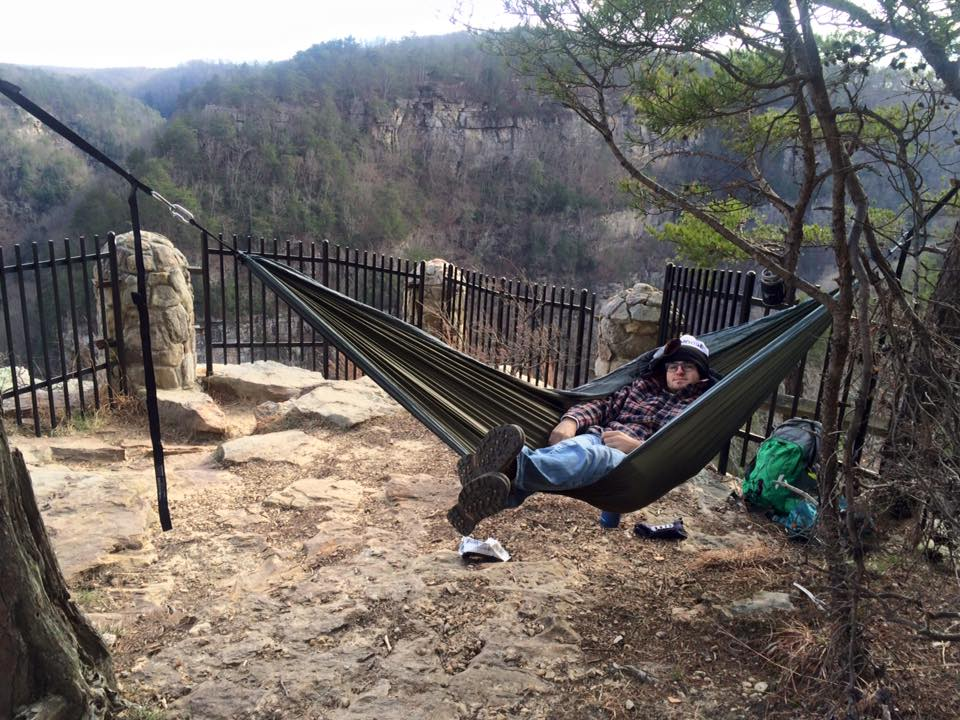

This is my favorite website that I visit every day
Hobbies:
| Things I do to relax: | Paint | Go Skateboarding |
|---|---|---|
| Things that cause stress in my life: | My School work | Webpage projects |
“ My name is Richie Everett, I am a sophomore here at the University of Georgia and this is my first time taking a course in Computer Science. I am originally from Atlanta, Georgia, where I was born and raised my whole life. Although Atlanta is only a short drive from Athens, at about an hour and 20 minutes away, I never really visited Athens until I began my college search. Even once I began looking at schools, UGA was not a school at the top of my list and it was a while before I found myself in Athens, Georgia, touring the University. I originally wanted to attend the University of Colorado Bolder, and was planning on going there after I received my letter of acceptance; however, soon after, I was accepted to the University of Georgia. Once I had gained admittance to UGA, I realized all the benefits of going to school close to home, as well as the benefits of the financial aid from the HOPE scholarship which make attending school at UGA such a good deal! I made the decision to come to school here in Athens, and although at first I did not think this would be the right choice for me, I am now happier than ever with my decision and know that UGA is my home.”
“ In my free time I enjoy relaxing with my friends whether it be at home watching TV or out downtown watching a football game. However, what I really like to do is spend my time outdoors. I am an avid mountain biker, hiker, and skateboarder, spending most of my time that is not spent on school work, doing one of these activities. I believe my love for the outdoors likely came from my father and his passion for being outside. He is an Eagle Scout and pushed me to join Boy Scouting at a young age. Through scouting, I learned many useful things about the outdoors and spent a great deal of time exploring the natural world around me. I am also now an Eagle Scout and still spend just as much time outside as I did when I was younger. If I’m not mountain biking, hiking, or skateboarding, I am probably playing with my dog Jax somewhere like at the river or a park. He means the world to me and is my constant companion, always at my side almost everywhere I go! ”
“ My dog Jax is my loyal companion and my best friend even though we have only been together for a short time. He is a yellow Labrador retriever and is six months old. I got him over the Summer about five months ago and my life has changed ever since! Although Jax is now my dog, he was originally one of my friends. He bought Jax with the intention of keeping him, but when he found out that his apartment would not allow pets, he was forced to give him up and I saw the opportunity to claim Jax as my own. I am so glad I did, because like myself, Jax loves to adventure and explore the outdoors. I try to take him somewhere outside every day to keep him active and happy. Even if I can’t make it somewhere like the river or the dog park on a particular day, I will make sure to bring Jax along with me when I am running errands, just so that he can get out of the house and see something new. With Jax by my side I am never alone or bored. He may require a lot of work and responsibility to look after, but the love that he gives back to me makes it so worth it. ”
“ Here is a nice quality photo of me camping in Northern Georgia “  “ I hope you have enjoyed learning a little bit about me “